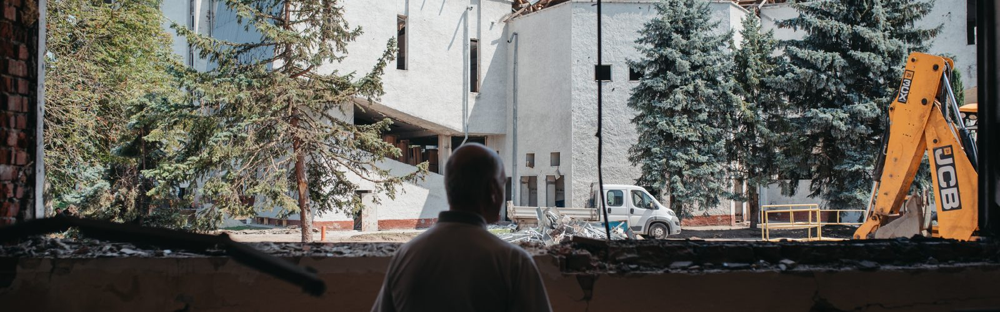
"It Wasn't Just the University That Suffered, But Also Ukraine's Energy Sector." How the Ivano-Frankivsk Oil and Gas University is Recovering After the Missile Strike
15.08.24
At dawn on Saturday, June 22, 2024, the rector of the Ivano-Frankivsk National Technical University of Oil and Gas (IFNTUNG), Ihor Chudyk, was supposed to celebrate his birthday. The first "greeting" was unfortunate—a phone call informing him that a Russian missile had struck the university he leads.
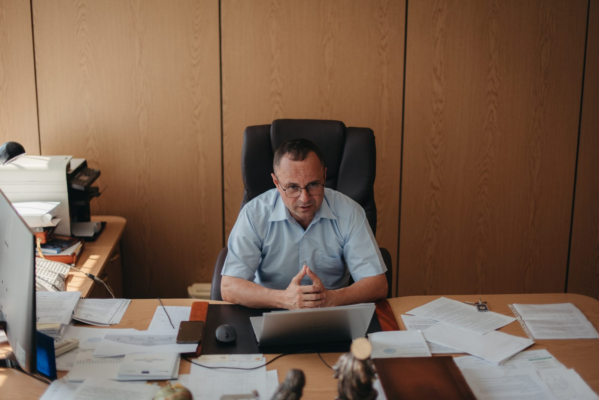
This was the first missile strike in Ivano-Frankivsk since the attacks on the local airport at the start of the full-scale invasion, and it will be long remembered by the city's residents. In addition to the university, nearby residential buildings were also damaged, but fortunately, there were no casualties or serious injuries.
The International Drilling Simulator Center Suffered the Most
The Ivano-Frankivsk Oil and Gas University is a unique educational institution in Ukraine, as it provides specialized education for professionals in the oil and gas industry, among other fields. The university has operated a drilling simulator center for 20 years, regularly certifying drilling rig workers. It was this facility that suffered the most damage from the Russian strike on June 22.
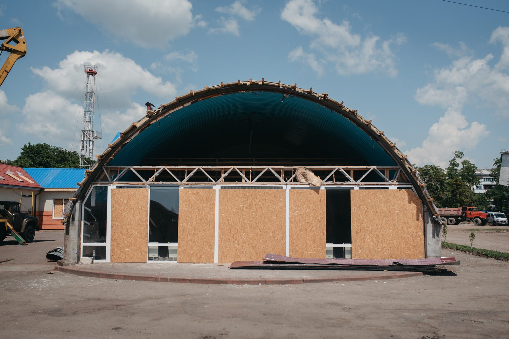
As a staff member and instructor at the drilling simulator center, and a lecturer at the Department of Oil and Gas Machinery and Equipment, Yuriy Mosora recalls his initial reaction was shock.
"This was not just a blow to the university, but to the entire energy sector of our country," he says. "The certification process for industry specialists who work on drilling rigs has now been halted. The center houses a full-scale simulator that fully replicates modern drilling rigs. There are about 200 such centers worldwide. We are accredited and operate under the aegis of the International Well Control Forum (IWCF) headquartered in Scotland."
The international certificate issued by the university's center is recognized worldwide. Without such certification, it is impossible to work in the oil industry.
Certification at the university's drilling center took place almost every week. Most clients were Ukrainians, but there were also foreigners—from the USA, Canada, and Middle Eastern countries. Now the simulator and other equipment have been deactivated. Restoring it is difficult and expensive—the estimated cost of a new simulator is about $2–3 million. Initially, the plan is to contact the manufacturer, Drilling Systems, to consult on whether the equipment can be repaired. The computer lab where specialists taking the certification exam completed the theoretical part also needs to be restored.
"We plan to restore the center's operations as soon as possible because there is a need for specialists, and the certificate is valid for only two years, so it must be regularly renewed," says Yuriy Mosora. "In the meantime, we may be able to purchase a small portable simulator to resume the certification process. We have sponsors. We hope for support from the graduates of our simulator center, as there are many of them worldwide. About three thousand people have been certified here."
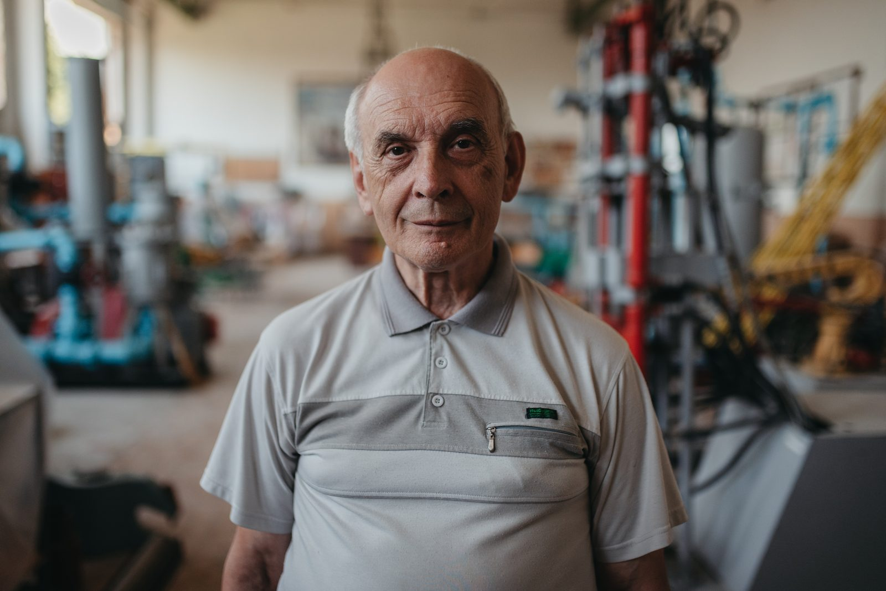
In addition to specialists working on drilling equipment, the drilling simulator center was constantly used to train students from the Department of Oil and Gas Machinery and Equipment, which was entirely housed in the academic building destroyed by the missile. This building sustained the most severe damage.
According to Yaroslav Fedorovych, the head of the department, students are trained in two specialties here: "Oil and Gas Engineering and Technologies" and "Industrial Engineering." The labs in the academic building housed full-scale samples of drilling equipment, hydraulic machinery, and compressors. These samples mostly survived, unlike the conference hall and multimedia classrooms.
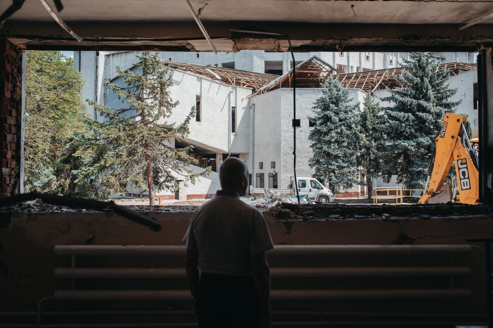
"Of the two multimedia classrooms, nothing is left," says Yaroslav Fedorovych. "A lot of money was invested in them, and everything was equipped in a modern way: with projectors and insulation. The renovation cost about 150,000 hryvnias. Now we'll have to start from scratch."
"All the Equipment Was Blown Out of the Windows by the Explosion"
The educational building No. 1, where students of IT specialties studied, also suffered significant damage from the strike. The explosion shattered windows, damaged the roof, and ceilings in the buildings.
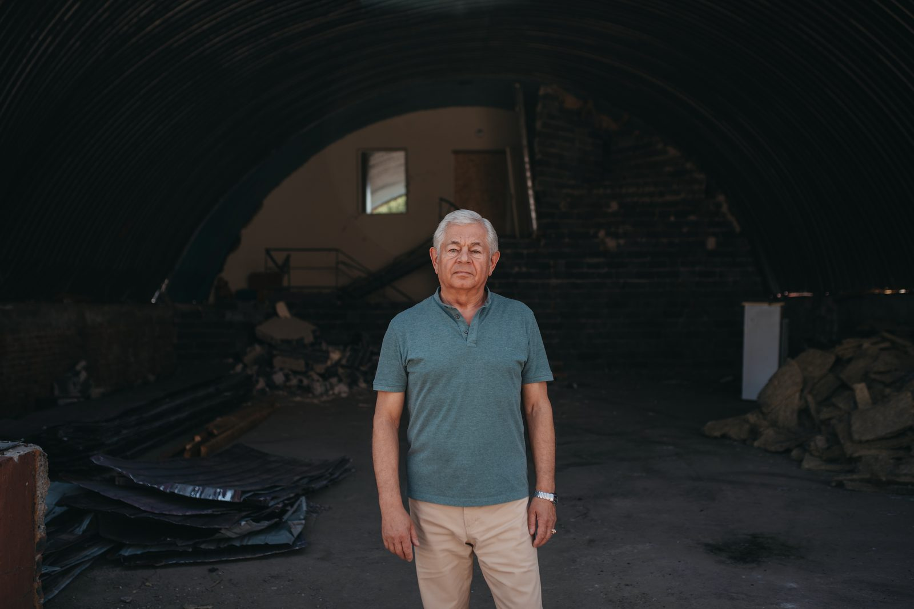
"There were stands here with lab work created by students," says Leonid Zamikhovsky, head of the Department of Information and Communication Technologies and Systems, showing one of the destroyed labs dedicated to the Arduino hardware and software complex. "All the ceilings were destroyed, all the equipment was blown outside by the blast wave, and we later had to collect it. There were shifts, and cracks appeared. When it rains, the water will flood in—there won't even be a floor left."
The department trains students in three specialties: "Automation and Computer-Integrated Technologies," "Information Systems and Technologies," and "Telecommunications and Radio Engineering."
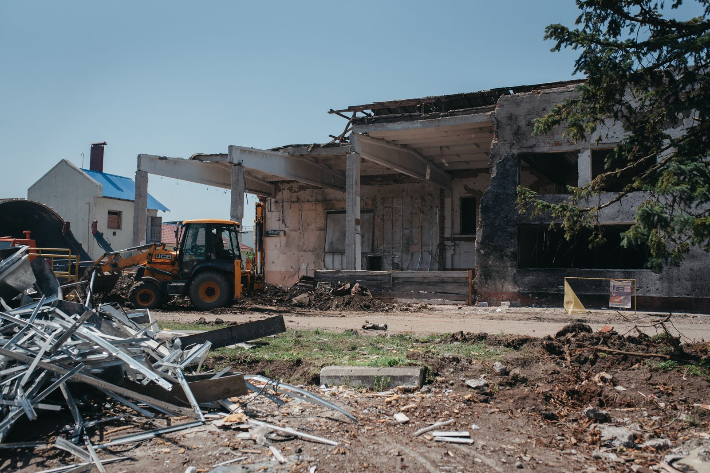
"The specialty 'Automation and Computer-Integrated Technologies' is unique. It has two educational programs: 'Systems Engineering. Internet of Things' and 'Software for Cyber-Physical and Robotic Systems.' There are many programmers now, but there are practically no specialists who can program hardware. This is a highly sought-after specialty."
The Department of Information and Communication Technologies and Systems at the university developed many unique programs used by various institutions. For example, a geographic information system on the Dniester River to measure water levels and temperatures, and air humidity. Or systems for monitoring water quality at water intake facilities for "Ivano-Frankivskvodokotekhprom." The department's faculty hopes to restore operations and the educational process as soon as possible.
Last week, representatives from Naftogaz of Ukraine—the university's main sponsor—visited. They promised to fully restore the building: roofs, windows, and doors. Meanwhile, the department will seek funds to restore the laboratories.
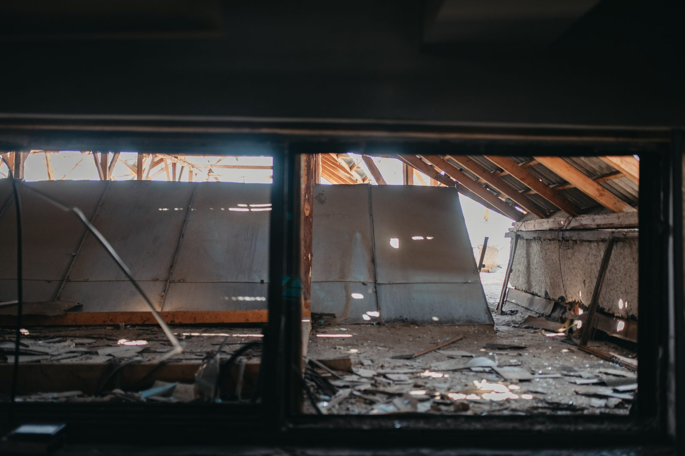
More Work for the Siemens Laboratory
The Siemens laboratory, located in a hangar on the university grounds, was also in the epicenter of the strike. Students performed lab work on Siemens equipment for nearly a dozen academic disciplines related to programming and information technologies. Currently, repairs are underway in the building, and the equipment has been moved to one of the classrooms in building No. 1.
"I had a conversation with representatives of Siemens-Ukraine. We prepared a list of equipment, and, if possible, they will supply it to the department over time. Not everything is out of order; we need to conduct an inspection. This is what we agreed to do with the department's faculty during the summer break," says Leonid Zamikhovsky.
"Tens of Millions of Hryvnias Needed for Restoration"
According to the university's rector, Ihor Chudyk, in addition to the damage sustained by two buildings and the laboratory, the university has suffered significant losses. Over 900 windows have been destroyed or damaged, and there is leakage in the sports complex's pool. However, they plan to restore everything, ideally by September 1.
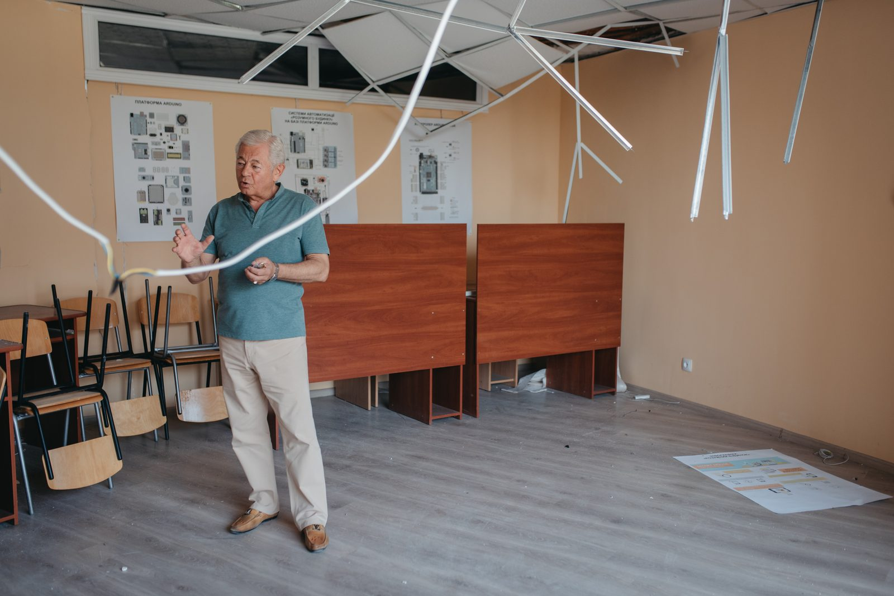
"Building No. 1 is essentially the most populated by students, with about 2,500 people studying there during the week. We will prioritize restoring the classrooms and laboratories in this building," says Ihor Chudyk. "Next will be the gymnasium and building No. 7. The Siemens laboratory will likely be relocated to one of the buildings. The bulk of the work is related to windows. If they are glazed, the slopes can be done during the school year. Roofing work can also be done in parallel. The roofs practically replicate the existing structure—with time, they started leaking, so they were covered with a slate roof on top. But now this base prevents atmospheric precipitation from entering."
An expert commission is currently working on the damaged university buildings. They will provide damage assessments, decisions, and proposals for restoration or demolition. Then, they will work with donors and raise funds.
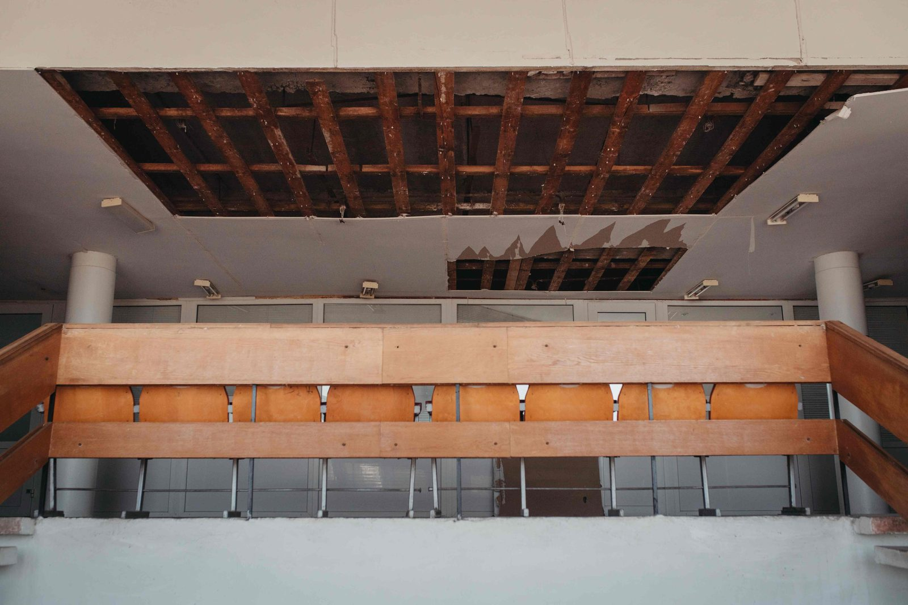
"We have a productive partnership with Naftogaz. Recently, we had a delegation led by Oleksiy Chernyshov. They assured us they would help," says the rector of IFNTUNG. "According to preliminary estimates, tens of millions of hryvnias are needed for restoration. But we are optimistic because we have strong partners."
Despite the optimism, Ihor Chudyk admits that seeing the strike on the university, where he has worked for several decades, was very difficult.
"Did the Russians target this place specifically to harm those who ensure Ukraine's energy security?" Ihor Chudyk asks. "There are many theories in this situation. Thank God there were no casualties."
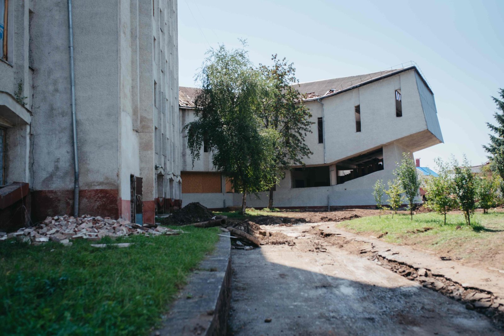
Despite the destruction, the Oil and Gas University is preparing for the admissions campaign. They plan to enroll no fewer students than last year—about 1,300.
"It's hard to say how applicants will react to the missile strike," says Ihor Chudyk. "Some may hesitate to join us, fearing another strike. But I don't think it will significantly impact the admissions campaign."
This year, the university is offering a new educational program that was piloted last year—"Information Technologies for Sustainable Development in Energy." Its graduates will be able to receive a dual degree from IFNTUNG and London South Bank University in the UK. Besides Ivano-Frankivsk University, only five other universities in Ukraine offer dual degree programs, according to the rector. Therefore, they hope that the positive achievements will outweigh the damage caused by the enemy missile.